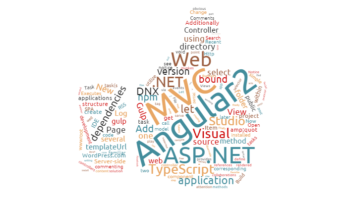

Angular 2 is not just another framework. Its Component-based web development is pretty much the future of web development. If we are unfamiliar with the component development pattern, it basically emphasizes the separation of concerns throughout a given system. For all the benefits of using Angular 1.x, it requires the entire stack to be written using Angular. Web components, on the other hand emphasizes the separation of concerns and allows segmentation within an app to be written independently of each other. If you’re familiar with the module-loading mechanism in Angular 1.x, this should come as no surprise. Angular 2 takes this a step further and requires nothing else to be written using Angular.
Angular 1.x was not built with mobile support in mind, where Angular 2 is mobile oriented. Angular 2 is using Hierarchical Dependency Injection system which is major performance booster. It implements unidirectional tree based change detection which again increases performance. Angular 2 provides more choice for languages. We can use any of the languages from ES5, ES6, TypeScript or Dart to write Angular 2 code. Where, Angular 1.x has ES5, ES6, and Dart. Using of TypeScript is a great step as TypeScript is an awesome way to write JavaScript.
Angular 2 is the new improved version of the ever popular JavaScript framework AngularJS. Angular 2 is a re-imagining of Angular applying all lessons learned from 1.x and promotes a component based architecture while leveraging new features of ES2015 (or TypeScript) like classes and modules.
Angular 2 consolidates the idea of service classes. From Angular 1 service, factory, providers, constants and values we get Angular 2 services which are just classes. Angular 2 has a lot less directives than Angular 1. In Angular 2 you can leverage the property-binding syntax to bind to DOM properties and events directly
Angular 2 is a modular framework where every piece of functionality is encapsulated within a module and exposed to other parts of the application as a service .
AngularJS is by far the most popular JavaScript framework available today for creating web applications. And now Angular 2 and TypeScript are bringing true object oriented web development to the mainstream, in a syntax that is strikingly close to Java 8.